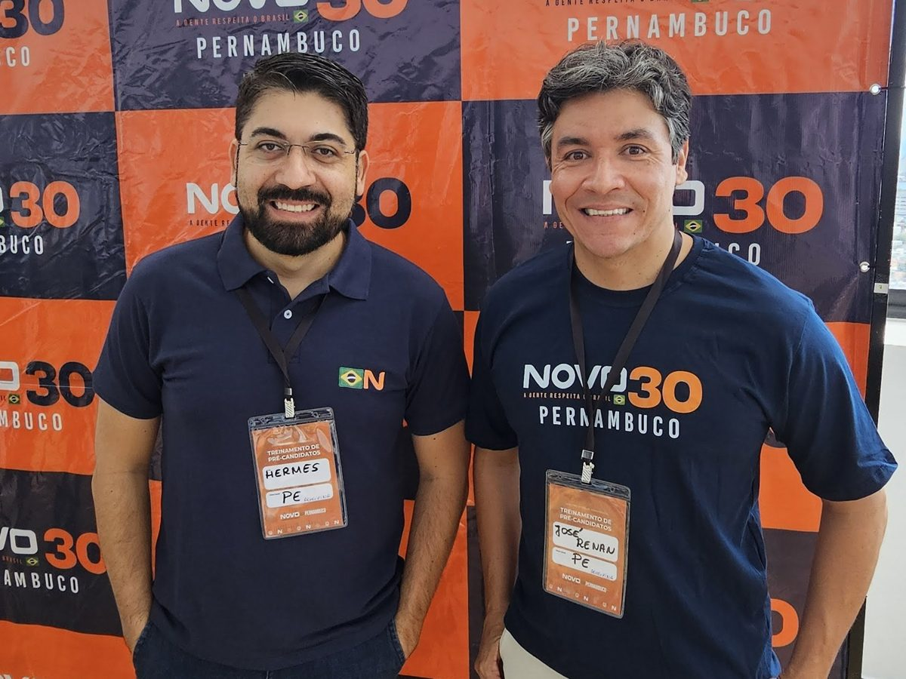

Publicado originalmente em 2 de outubro de 2026, em partidonovoararipe.com.br/daqui-de-araripina, durante a campanha eleitoral de 2026. Esta é a cópia de arquivo, mantida por Hermes Alves. Baixar em PDF. Outras cópias: Internet Archive, Academia.edu.
Artigo · 2 de outubro de 2026
Daqui. De Araripina. Do Araripe.
Duas candidaturas, uma terra. Renan Bihum e Hermes Alves nasceram em Araripina e estão na eleição de domingo. Quem são, de onde vêm e o que dizem sobre o Araripe.

Quem é daqui conhece a nossa terra.
Conhece a Chapada riscando o horizonte no fim da tarde. Conhece o pó branco do gesso nas estradas, a feira cheia de gente, o barulho da cidade que recebe comprador do Piauí e do Ceará. Conhece também o outro lado: a torneira seca, a espera pela água, o filho que terminou os estudos e foi embora porque aqui não achou trabalho.
Quem é daqui não precisa que ninguém explique o Araripe. Sabe de cor.
Este texto é sobre duas pessoas que sabem de cor.
O neto de Zé Bihum
Renan Bihum nasceu em Araripina. A família é do distrito de Lagoa do Barro, onde o avô, José Freire Bihum, o Zé Bihum, foi eleito vereador por duas legislaturas para representar a comunidade na Câmara de Araripina.
"Sou aqui de Araripina, filho da região, neto de Zé Bihum lá da Lagoa do Barro."
Renan estudou em escola pública municipal, fez o curso técnico em contabilidade e, aos 16 anos, já estagiava na Caixa Econômica Federal, atendendo o público. Formou-se em Direito pela Universidade de Fortaleza e advogou na capital cearense.
Podia ter ficado por lá. Voltou.
Em 2013, Renan voltou para o Sertão do Araripe. Empreendeu, deu aula na universidade e presidiu a AMMTT, a autarquia de trânsito e mobilidade de Araripina. No encontro com apoiadores no Curioso, em 19 de setembro, com o avô na plateia, ele disse:
"Vovô, você é a minha inspiração. Eu espero que, sendo eleito, eu tenha esse mesmo compromisso e comprometimento que o senhor tem com o nosso povo."
O filho de Thico da Popy
Se você estudou em Araripina, é bem provável que já tenha comprado caderno na Popy. A Papelaria Popy está na cidade desde 1980, aberta por Thico e Rosa Maria. Thico é o pai de Hermes Alves.
Hermes nasceu em Araripina em 1982. Em 2000, com 17 anos, colocou no ar o araripina.com.br, o primeiro site da região do Araripe. A página de abertura se apresentava como "o portal de nossa terra". Dois anos depois, fundou em Araripina a Softagon, uma empresa de tecnologia. Ajudou a criar o Hub Inova Araripe, que reúne jovens empreendedores da região em torno de inovação. Hoje preside o Partido NOVO em Araripina e está na chapa de Carlos Sant'Anna ao Senado, como 2º suplente.
Foi no mesmo encontro do Curioso que Hermes resumiu por que entrou nessa:
"A nova política é que, se o cidadão precisou pedir, é porque o governo já falhou. A gente quer a liberdade de vocês, que vocês não precisem pedir."
Gente que já cuidou da coisa pública
Os dois não chegam à política para aprender do zero. Hermes foi secretário de Administração e secretário de Desenvolvimento Econômico de Araripina. Renan presidiu a autarquia de trânsito da cidade. Os dois conhecem a gestão pública por dentro e sabem quanto custa fazer uma obra sair do papel, e quanto custa quando ela não sai.
Por que importa ser daqui
Renan costuma explicar assim:
"Não basta a gente eleger um deputado federal. A gente precisa eleger um deputado federal que seja do Sertão do Araripe. Alguém que conheça nossas estradas, conheça nossas cidades, conheça nossas dificuldades e, principalmente, conheça o potencial da nossa gente."
O potencial ele sabe qual é. "Na nossa região a gente tem um solo fértil, o que nos falta é água", disse ele no Debate Geral da Araripe FM. A água não pode chegar só à torneira de casa. Tem que chegar também à indústria e ao comércio, porque é isso que segura o emprego aqui.
E o emprego é o que segura a família. No Curioso, Renan disse o que todo pai e toda mãe do Araripe já pensaram pelo menos uma vez:
"Que nossos filhos, nossos netos não tenham que ir para outras regiões, para outros estados, em busca de uma oportunidade de trabalho ou de educação."
Hermes falou do Renan na mesma noite:
"Renan teve a coragem de vir candidato. Teve a coragem de colocar esse discurso na rua. Teve a coragem de dizer que política com ética e moral pode ser feita."
Araripina também está representada
No domingo, 4 de outubro, Araripina tem nomes da própria terra na urna.
Renan Bihum concorre a deputado federal pelo Partido NOVO, com o número 3037. Deputado federal é o primeiro cargo que aparece na urna.
Hermes Alves é o 2º suplente na chapa de Carlos Sant'Anna ao Senado, número 300. A 1ª suplente é Carla Pinheiro.
Quem quiser montar a própria colinha, com a ordem dos cargos na urna, pode usar partidonovoararipe.com.br/minha-colinha.
Do Sertão do Araripe para Pernambuco
Duas candidaturas, uma terra. Gente nascida e criada no Sertão do Araripe, que vem da mesma cidade, conhece as mesmas ruas e quer a mesma coisa: que quem nasce aqui possa ficar aqui.
Se este texto falou de você, compartilhe com alguém daqui: o primo da Lagoa do Barro, a vizinha que compra na Popy desde menina, o amigo que foi embora e continua com o título em Araripina.
Acompanhe
- Renan Bihum: instagram.com/renanbihum
- Hermes Alves: instagram.com/hermesalvesbr
Propaganda eleitoral. Partido NOVO (30), Araripina, Pernambuco. Renan Bihum, 3037, candidato a Deputado Federal. Carlos Sant'Anna, 300, candidato a Senador; 1ª suplente Carla Pinheiro; 2º suplente Hermes Alves.